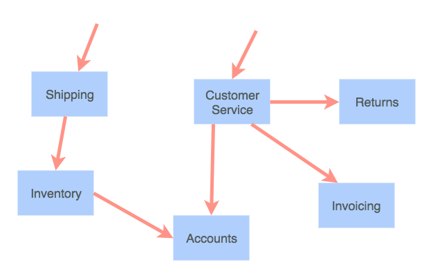
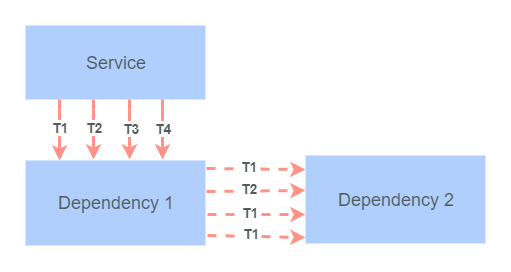
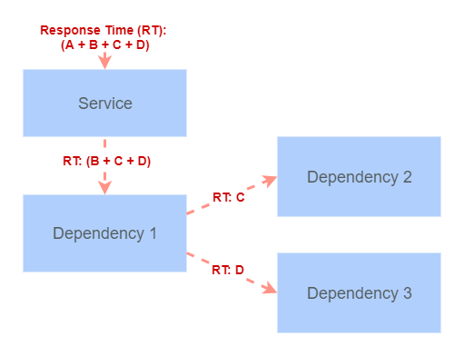

val getMerchantDiscount : merchantId:'a -> 'b
Full name: index.getMerchantDiscount
val merchantId : 'a
val getProductPrice : productId:'a -> discount:'b -> 'c
Full name: index.getProductPrice
val productId : 'a
val discount : 'b
val async : AsyncBuilder
Full name: Microsoft.FSharp.Core.ExtraTopLevelOperators.async
val discount : obj
Multiple items
type Async
static member AsBeginEnd : computation:('Arg -> Async<'T>) -> ('Arg * AsyncCallback * obj -> IAsyncResult) * (IAsyncResult -> 'T) * (IAsyncResult -> unit)
static member AwaitEvent : event:IEvent<'Del,'T> * ?cancelAction:(unit -> unit) -> Async<'T> (requires delegate and 'Del :> Delegate)
static member AwaitIAsyncResult : iar:IAsyncResult * ?millisecondsTimeout:int -> Async<bool>
static member AwaitTask : task:Task -> Async<unit>
static member AwaitTask : task:Task<'T> -> Async<'T>
static member AwaitWaitHandle : waitHandle:WaitHandle * ?millisecondsTimeout:int -> Async<bool>
static member CancelDefaultToken : unit -> unit
static member Catch : computation:Async<'T> -> Async<Choice<'T,exn>>
static member FromBeginEnd : beginAction:(AsyncCallback * obj -> IAsyncResult) * endAction:(IAsyncResult -> 'T) * ?cancelAction:(unit -> unit) -> Async<'T>
static member FromBeginEnd : arg:'Arg1 * beginAction:('Arg1 * AsyncCallback * obj -> IAsyncResult) * endAction:(IAsyncResult -> 'T) * ?cancelAction:(unit -> unit) -> Async<'T>
static member FromBeginEnd : arg1:'Arg1 * arg2:'Arg2 * beginAction:('Arg1 * 'Arg2 * AsyncCallback * obj -> IAsyncResult) * endAction:(IAsyncResult -> 'T) * ?cancelAction:(unit -> unit) -> Async<'T>
static member FromBeginEnd : arg1:'Arg1 * arg2:'Arg2 * arg3:'Arg3 * beginAction:('Arg1 * 'Arg2 * 'Arg3 * AsyncCallback * obj -> IAsyncResult) * endAction:(IAsyncResult -> 'T) * ?cancelAction:(unit -> unit) -> Async<'T>
static member FromContinuations : callback:(('T -> unit) * (exn -> unit) * (OperationCanceledException -> unit) -> unit) -> Async<'T>
static member Ignore : computation:Async<'T> -> Async<unit>
static member OnCancel : interruption:(unit -> unit) -> Async<IDisposable>
static member Parallel : computations:seq<Async<'T>> -> Async<'T []>
static member RunSynchronously : computation:Async<'T> * ?timeout:int * ?cancellationToken:CancellationToken -> 'T
static member Sleep : millisecondsDueTime:int -> Async<unit>
static member Start : computation:Async<unit> * ?cancellationToken:CancellationToken -> unit
static member StartAsTask : computation:Async<'T> * ?taskCreationOptions:TaskCreationOptions * ?cancellationToken:CancellationToken -> Task<'T>
static member StartChild : computation:Async<'T> * ?millisecondsTimeout:int -> Async<Async<'T>>
static member StartChildAsTask : computation:Async<'T> * ?taskCreationOptions:TaskCreationOptions -> Async<Task<'T>>
static member StartImmediate : computation:Async<unit> * ?cancellationToken:CancellationToken -> unit
static member StartWithContinuations : computation:Async<'T> * continuation:('T -> unit) * exceptionContinuation:(exn -> unit) * cancellationContinuation:(OperationCanceledException -> unit) * ?cancellationToken:CancellationToken -> unit
static member SwitchToContext : syncContext:SynchronizationContext -> Async<unit>
static member SwitchToNewThread : unit -> Async<unit>
static member SwitchToThreadPool : unit -> Async<unit>
static member TryCancelled : computation:Async<'T> * compensation:(OperationCanceledException -> unit) -> Async<'T>
static member CancellationToken : Async<CancellationToken>
static member DefaultCancellationToken : CancellationToken
Full name: Microsoft.FSharp.Control.Async
--------------------
type Async<'T>
Full name: Microsoft.FSharp.Control.Async<_>
type AsyncArrow<'a,'b> = 'a -> Async<'b>
Full name: index.AsyncArrow<_,_>
val getProductPrice : productId:'a -> 'b
Full name: index.getProductPrice
val execute : obj
Full name: index.execute
val logStart : 'a -> 'b
Full name: index.logStart
val log : value:'T -> 'T (requires member Log)
Full name: Microsoft.FSharp.Core.Operators.log
val logFinish : 'a -> 'b -> 'c
Full name: index.logFinish
val logError : ex:'a -> 'b
Full name: index.logError
val ex : 'a
val sprintf : format:Printf.StringFormat<'T> -> 'T
Full name: Microsoft.FSharp.Core.ExtraTopLevelOperators.sprintf
val makeHttpRequest : 'a
Full name: index.makeHttpRequest
val injectCorrelationId : correlationId:'a -> req:'b -> 'b
Full name: index.injectCorrelationId
val correlationId : 'a
val req : 'b
val makeHttpRequestWithCorrelationId : obj
Full name: index.makeHttpRequestWithCorrelationId
type User =
{Id: obj;
Name: string;}
Full name: index.User
User.Id: obj
User.Name: string
Multiple items
val string : value:'T -> string
Full name: Microsoft.FSharp.Core.Operators.string
--------------------
type string = System.String
Full name: Microsoft.FSharp.Core.string
Multiple items
val seq : sequence:seq<'T> -> seq<'T>
Full name: Microsoft.FSharp.Core.Operators.seq
--------------------
type seq<'T> = System.Collections.Generic.IEnumerable<'T>
Full name: Microsoft.FSharp.Collections.seq<_>
val id : x:'T -> 'T
Full name: Microsoft.FSharp.Core.Operators.id
Building microservices with F#
A journey into the microservice world with F#, Net Core and Docker
Alexander Mogilka
@alxmglk
Microservices to the rescue

Small autonomous services that work together and modelled around a business domain
Benefits of the microservices
- independent release cycle of each service
- failures are isolated
- granular scaling
- freedom to choose the tech stack
How about challenges?
- everything fails all the time
- additional overhead of the remote calls
- take care of the inter-microservice contracts
- increased operational costs
Welcome to hell the world of distributed systems
We cannot eliminate failures but we can minimize the impact
Synchronous calls are pure evil
A bunch of parallel synchronous calls will suddenly exhaust the thread pool

Writing async code in F# is a piece of cake
1:
2:
3:
4:
5:
6:
7:
8:
9:
10:
11:
12:
13:
14:
15:
|
// MerchantId -> Async<MerchantDiscount>
let getMerchantDiscount merchantId = ...
// ProductId -> MerchantDiscount -> Async<ProductPrice>
let getProductPrice productId discount = ...
// 1st approach : async workflow
// Async<ProductPrice>
async {
// MerchantDiscount
let! discount = getMerchantDiscount merchantId
return! getProductPrice productId discount
}
// 2nd approach: more idiomatic way
// MerchantId -> Async<ProductPrice>
getMerchantDiscount >> Async.bind (getProductPrice productId)
|
Fail fast
Slow failures propagate from the dependencies up to the consumers

Circuit breaker and retries in the wild
1:
2:
3:
4:
5:
6:
7:
8:
9:
10:
11:
|
type AsyncArrow<'a,'b> = 'a -> Async<'b>
// AsyncArrow<Guid, HttpResponseMessage>
let getProductPrice productId = ...
// AsyncArrow<Guid, HttpResponseMessage> - the signature is still the same
let execute =
getProductPrice
|> AsyncArrow.after (updateInvoice invoice)
|> AsyncArrow.retry retryCount backoffStrategy
|> AsyncArrow.circuitBreaker circuitBreakerPolicy
|
Make failures discoverable
-
collect and aggregate logs with metrics
- don't forget about correlation ids
- monitoring
Seamless incorporation of the logging
1:
2:
3:
4:
5:
6:
7:
8:
9:
10:
11:
|
let logStart _ = log.Info "Import started"
let logFinish _ _ = log.Info "Import finished"
let logError ex =
sprintf "An error has occured during the import: %s" ex.Message
|> log.Error
importProducts
|> updateInventory
|> AsyncArrow.before logStart
|> AsyncArrow.after logFinish
|> AsyncArrow.onError logError
|
Inject correlation id into the service request
1:
2:
3:
4:
5:
6:
7:
8:
9:
10:
11:
12:
|
// HttpRequestMessage -> Async<HttpResponseMessage>
let makeHttpRequest = ...
// HttpRequestMessage -> HttpRequestMessage
let injectCorrelationId correlationId (req : HttpRequestMessage) =
req.Headers.Add ("Correlation-Id", correlationId)
req
// HttpRequestMessage -> Async<HttpResponseMessage>
let makeHttpRequestWithCorrelationId =
makeHttpRequest
|> AsyncArrow.mapIn (injectCorrelationId correlationId)
|
Functional composition is sweet
Due to the rich capabilities of functional composition you could easily address cross-cutting concerns like retries, timeouts, logging etc without any changes to your business logic
Microservice API management
- adhere to the Postel's law
- write consumer tests on the API and run them on each check in of the producer
- document your API (Swagger)
Explicit serialization
1:
2:
3:
4:
5:
6:
7:
8:
9:
10:
11:
12:
13:
14:
15:
16:
17:
18:
19:
|
type User = {
Id : Guid
Name : string
}
with
static member ToJson(x : User) =
seq {
yield "id" .= x.Id
yield "name" .= x.Name
} |> jobj
static member FromJson(json : JsonValue) =
jsonParse {
// .@ : JsonValue<'A>; id : Guid
let! id = json .@ "id"
let! name = json .@? "name"
return { Id = id; Name = name }
}
|
Conclusion
- Microservices architecture provides a lot of benefits but at the same time requires you to adopt a number of advanced practices
- F# and functional paradigm work perfect for the microservices, especially in comparison to the object-oriented languages